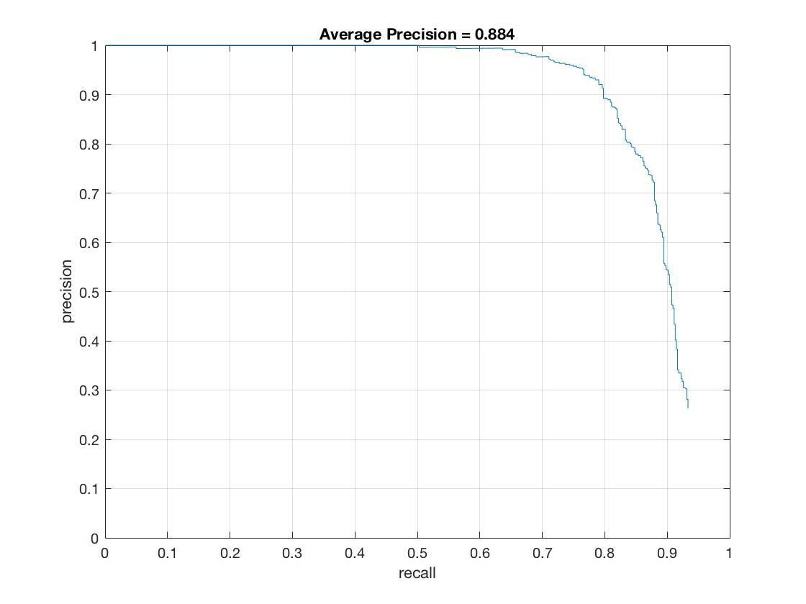

The template size should change to a rectangle, and the feature dimensionality would also change size. We would use a rectangle with the same aspect ratio of the average human height and width. After concatenation, the feature dimensionality would likely not be 1116x1.
The ROC curve has axes of true-positive rate vs. false-positive rate thus the graph represents the tradeoff between detecting more true-positives and more false-positives. Ideally, we want a high true-positive and low false positive rate - this point will lie in the top left of the curve. We can use this graph to determine parameters by plotting the ROC curves for various values of a parameter such as number of scales and confidence. We should then select the value of that parameter with the ROC that hugs the left and top axes closest.
The classifier would not work if the images were rotated 180°. The classifier is trained on vertical faces thus the gradient representation will be exclusive to that representation. An inverted face would produce different gradients and thus a different feature representation. Training the classifier on different feature representations will produce different weighting vectors.
I implemented the baseline proj5 algorithm.
My get_positive_features.m function creates a Histogram of Oriented Gradients (HoG) representation for each of the 36x36 positive training images.
My get_random_negative_features.m function creates 9936 HoG negative representations from 276 images. The function generates equal numbers of features from each image - each image is mined for 36 features. The function randomly generates a 36x36 box in each image and creates a 1116 dimensional feature representation of that box.
The positive and negative features are labeled with a 1 and -1, respectively. The SVM is trained using a call to vl_svmtrain. The SVM frequently achieves accuracy of ~0.99 on the training data.
My run_detector.m function uses a sliding window to detect faces in all images. For each scale the function calls vl_hog once. Faces are detected over six scales: 0.10, 0.25, 0.50, 0.75, 1, 1.25. If the SVM score is greater than a threshold of 0.20 then the bounding box is saved. Once all scales have been searched the function performs non-maximal suppression by calling non_max_supr_bbox.
The figure above shows a 256x256 HoG representation of a face. This representation was used with a step size of 3.
The figure above shows the precision-recall curve for a step size of 3.
I used a relatively low threshold of 0.20 to boost my precision up to ~90%. A low threshold significantly increases run time because it often feeds the non-maximal suppressino function hundreds of bounding boxes. When tested with higher thresholds of 0.50 and 0.75 the precision drops to ~85%. I wanted to test how precise my algorithm could work so I ended up sticking with a low threshold.
I searched over six scales: 0.10, 0.25, 0.50, 0.75, 1, 1.25. When I tested over nine scales - 0.10, 0.25, 0.375, 0.50, 0.65 0.75, 0.875 1, 1.25 - I saw almost no change in the ROC curve. With a step size of 3 the precision improved to 89.2% compared to 88.4%. I use six scales instead of nine to improve run time. When I ran my algorithm on an unscaled image I achieved a precision of 32%.
With step sizes of 6, 4, and 3 I obtained precisions of 80.8%, 87.8% and 88.4%, respectively. Reducing the step size to 4 dramatically improves the precision while the jump from 4 to 3 only increases the precision by 1%.
The program identified 26/28 or 92.9% of the faces. I missed one face in the front row and one face in the back row. The face in the front row was detected at smaller scales, but not at the correct larger scale. The face in the back is partially obscured by another face. This algorithm does not perform well with occlusions. I achieved a high number of spurious bounding boxes, however this behavior seems fitting with a low threshold of 0.15.
I reran the program with a threshold of 0.85 and achieved better results. With a threshold of 0.85 I achieved an average precision across the entire test set of 85.8%. I detected 25/28 faces while filtering most of the false positives from the previous run.